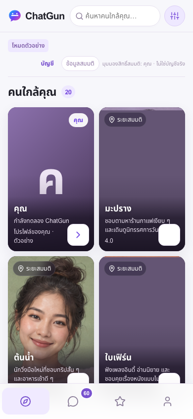
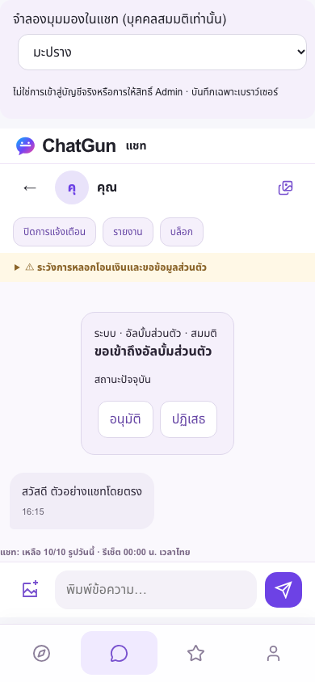
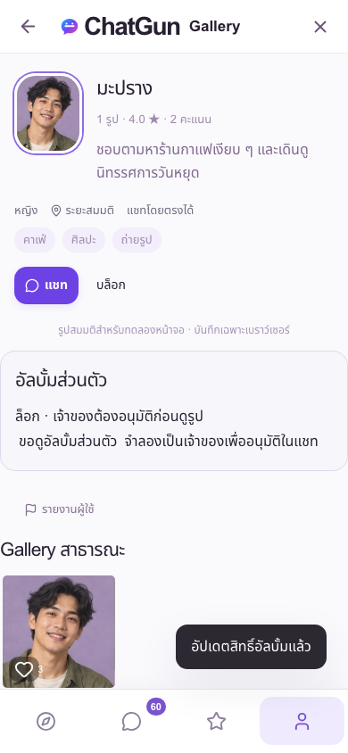
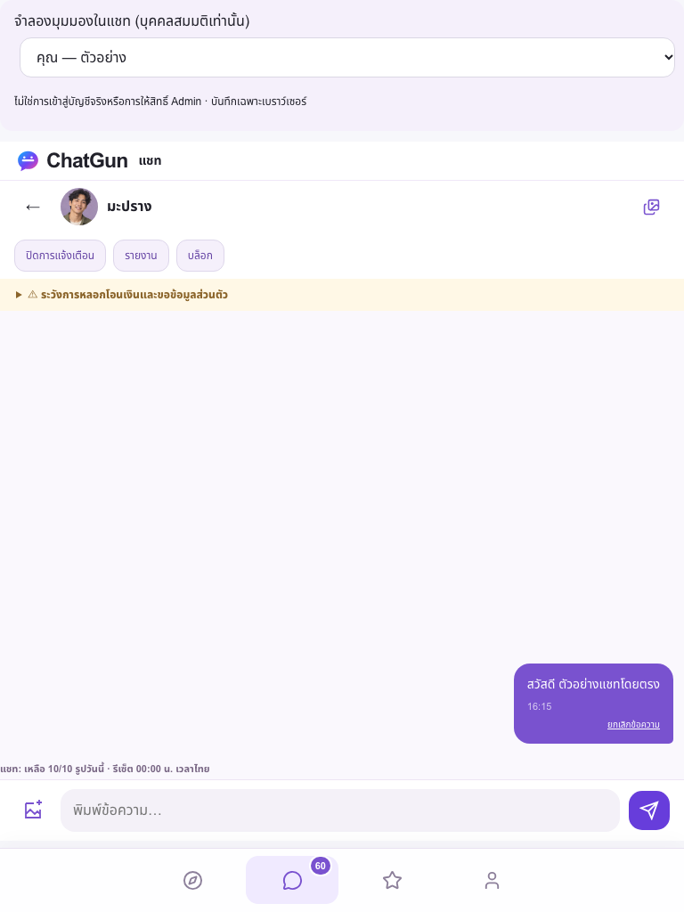
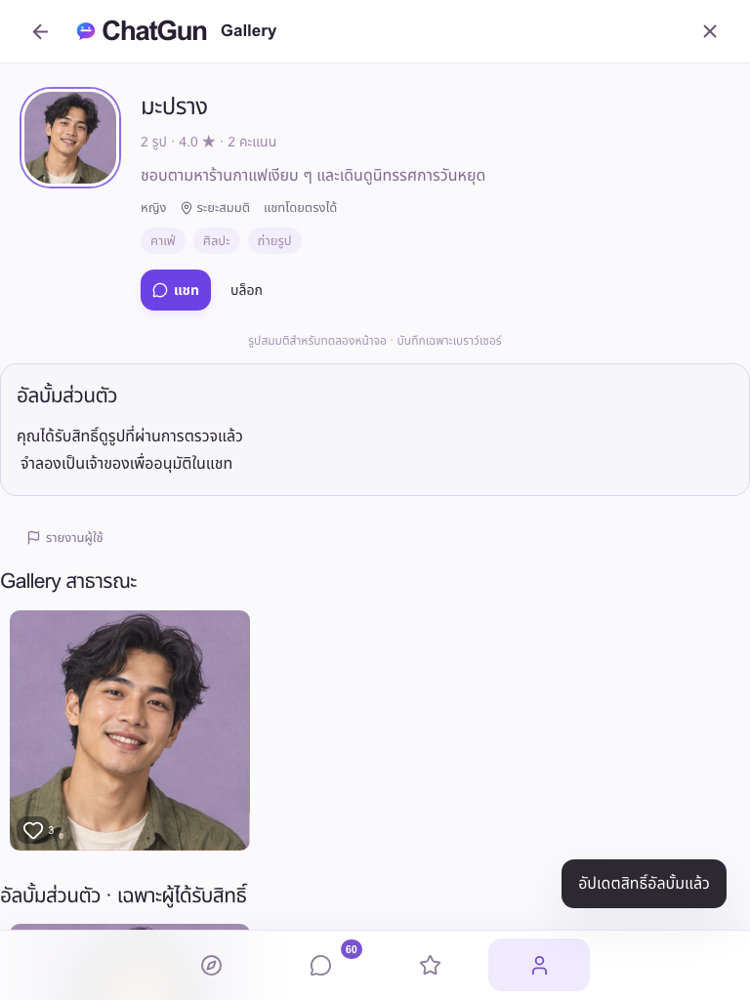
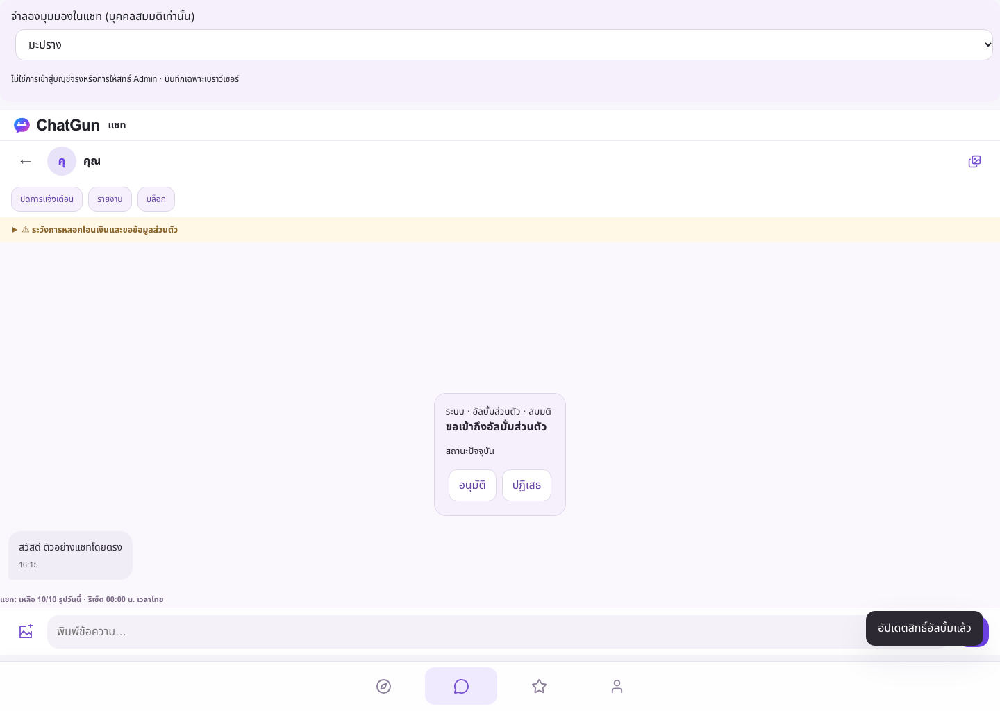
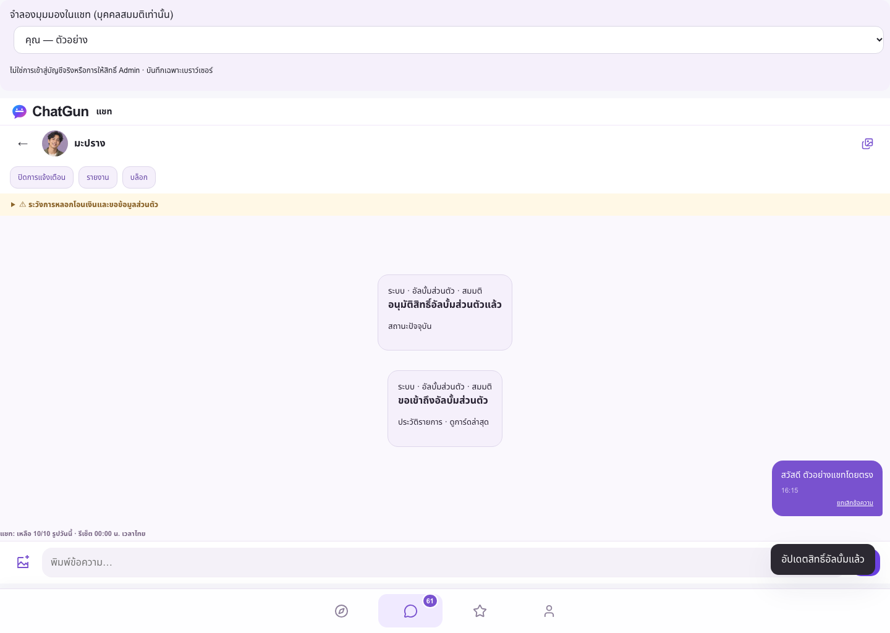
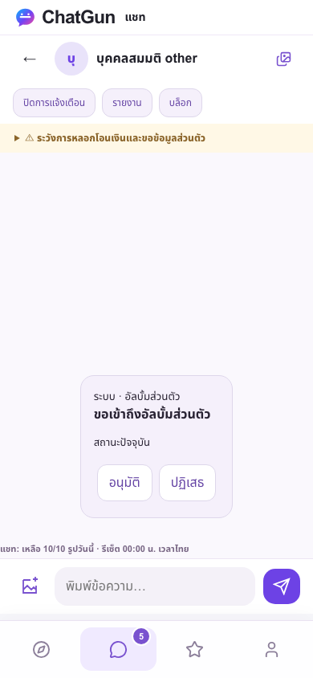
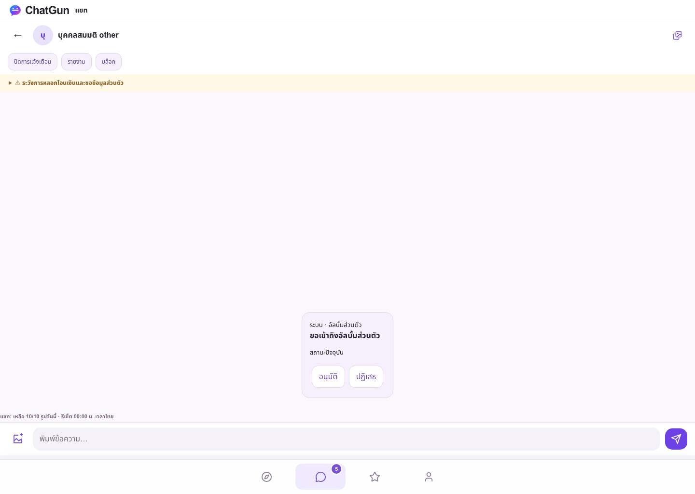

Consolidated implementation based on PR #12, commit 6b6af92ea34a75b5698751c43c6ec03e97d79e8d. Original NEAR geometry, Noto Sans Thai, violet/lime palette, ChatGun branding, own-card-first and all 20 fictional members retained. Friendship navigation/actions are intentionally removed by the new owner decision.
Production fictional demonstration · Isolated staging Preview. Actual deployed SHA: a184dc29eb10d565309bd4243be786186764e475; canonical Pages deployment fe23654c-2cc1-4ab6-8833-3275f6bbcbb8. Six public asset hashes match the Git commit. GitHub main was not merged.
| Validation | Actual result |
|---|---|
| Unit / integration / security | 114 PASS, 0 FAIL, 0 SKIP |
| Real Cloudflare API, D1, private R2 | 26 PASS, including concurrent approval, cross-user denial, private-byte authorization, revocation and actual R2 cleanup |
| Full Preview Playwright | 76 PASS, 0 FAIL, 36 SKIP; includes real synthetic requester/owner browser sessions and private-image comments, revocation, logout |
| Actual Production public demo Playwright | 12 PASS, 0 FAIL, 6 duplicate-viewport SKIP; no API mocks and no server writes |
| Dependencies | 0 reported vulnerabilities |
Preview skips: 16 protected legacy fixture tests intentionally not run, 18 duplicate explicit viewport cases, one desktop-inapplicable mobile test, one duplicate real isolated case. OAuth provider flows were not repeated; mocked provider UI tests are not counted as real OAuth success.
Both protected staging and Production bindings remain unchanged; original staging aggregate fingerprint matches before/after. Migration 0013 was applied only to the new isolated D1 database. A repeated migration run found nothing pending there; Production still lists 0013 as pending. Production real social/OAuth/media/admin/registration gates remain false and R2 is unbound. Eleven disposable isolated test sessions were revoked after testing; no users or preserved fixtures were deleted.
| Resource | Required authorization |
|---|---|
| Direct text/image send | Authenticated active onboarded adult sender and recipient; no self; no block either direction; recipient contact enabled; CSRF; 30 sends/minute; 10 newly contacted recipients/Bangkok day; repeated identical text throttled for 30 seconds. SQL insert trigger closes the preflight/write race. |
| Conversation history/inbox | Actual message/system-event participants, eligible active adults, no block; inbox derived from actual activity, paginated, not friendship. Recipient opt-out stops sends but preserves history read access. Muting suppresses notification prompts; no message text in browser notifications. |
| Public Gallery | Authenticated eligible member, explicit public photo visibility, active owner, no block, manually released/permitted category. Historical photos default private. |
| Private Album, bytes, thumbnails, comments, likes | Owner or current server grant scoped to owner/viewer, active eligible accounts, no block; separately requires manual media release. Same checks on every request; no-store responses. Unauthorized lists contain no private IDs, count, filenames, captions, URLs or comments. |
| Discovery/profile portraits | Explicit public, active, manually released general image only; otherwise safe fallback. Selected private-photo ID is not serialized to other members. |
| Approve/reject/revoke | Album owner only, session/CSRF, expected revision/status; approval rechecks block and eligibility inside the update. Requester may cancel only their pending request. |
| Moderation | Existing explicit RBAC, exceptional evidence purpose, audit trail, manual reasons and recent-auth gates unchanged. Album owner approval cannot release quarantined, prohibited or Sensitive media. |
pending → approved | rejected | cancelled; approved → revoked. Rejected/cancelled/revoked pairs may request again after one hour. One durable request row per pair; monotonically increasing revision. SQLite triggers atomically write the grant and typed chat event with the transition. Duplicate clicks, stale tabs and concurrent decisions cannot issue multiple grants. Text/HTML posted by users never becomes a system event.
Event payload: id, request_id, album_owner_id, requester_id, actor_user_id, event_type, revision, created_at, owner_read_at, requester_read_at; response adds current request status/revision. Historical cards are inert. Blocking transitions pending/approved requests to revoked; unblocking does not restore consent. Account deletion cascades requests, grants, events, preferences and initiation metadata.
Click แชท on any fictional member. Profile → ขอดูอัลบั้มส่วนตัว → จำลองเป็นเจ้าของเพื่ออนุมัติในแชท. The labelled selector switches fictional chat perspective only. Approve/reject/revoke generate local persistent cards. Return to “คุณ — ตัวอย่าง” to see the other side. Existing IndexedDB chat history is migrated by reading existing pairs without destroying messages or profiles.
This is browser-only fiction, not a real identity switch or Admin permission. All demonstration image files remain public fictional assets; the Private Album UI demonstrates consent, not confidentiality of those published sample files. Real private R2 enforcement is tested separately in isolated staging.
23017b53386fb67fc62a52cdd017454c. Never select PiggyPrice.chatgun-auth-staging / 5bbfd55d-eb22-4324-8a7d-57bef14110ea; R2 chatgun-media-staging. No migration, seed, reset, cleanup or presence refresh is authorized there for this work.chatgun-issue13-staging / 275d9820-6aec-494a-8bb5-b7ed9b8b74cc, private bucket chatgun-issue13-media, Pages chatgun-issue13-staging. Apply migrations 0001–0013 here only; verify foreign keys, indexes and exact trigger definitions. Re-running the migration runner uses its migration history; do not rerun ALTER TABLE directly.f8206788-ecba-4999-a95f-bfcd3c47a69f, SHA 12e55fde423832152d7317c3e85bfd42f53eaf01, with all live gates still closed. No database rollback is needed. Never roll back to friendship-era live code with social gates enabled: that code does not understand explicit album visibility.The Issue 13 branch alone is excluded from Git-triggered builds in the legacy Pages project, preventing deployment against the unmigrated protected fixture database. All other branches retain their previous build inclusion, and Production source/configuration is unchanged. The release remains unmerged; a future main build can replace a direct-upload release and must undergo the same checks. No new backup-retention or deletion guarantees are made.
Test summary · Cloudflare API/D1/R2 · Production SHA / asset hashes · Production fail-closed API checks · Production isolation · Preserved staging counts / schema integrity · Full browser log.
Initial validation found obsolete friendship assertions and a real authenticated ?tab=chat initialization bug; both were fixed and the frozen complete suite rerun. Chat messages now render chronologically with stable pagination/scroll recovery. Revoked deep-linked photos return to a locked album with a Thai explanation. Real cleanup logic was exercised against isolated R2; this does not claim a Cron fired or that human moderation is staffed outside approved coverage.








